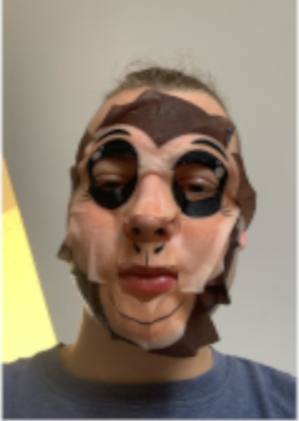

Dominik Wasilewski
Urodzony 16 kwietnia 2002 roku w Pilonie. Zamieszkały w okolicach Szkoły Podstawowej i boiska piłkarskiego.
Według najnowszych informacji posiada 186 cm wzrostu i 85kg masy. Jego zainteresowania to min. kobiety, informatyka, programowanie, motoryzacja, gry komputerowe, ostre chlanie, Jana mamy jebanie.
Dominik jest jedną z osób, które mają największy wpływ na młodą społeczność Pilony, niejednokrotnie organizował na terenie miasta różne eventy. Dominik naukę rozpoczął od Szkoły podstawowej w Pilonie, kiedy
ją ukończył zaczął uczyć się w gimnazujm w Gronowie Górnym. W 2019 roku po bardzo dobrze napisanym egzaminie gimnazjalnym dostał się do II liceum w Elblągu, które ukończył pisząc mature
a ta dała mu przepustkę do studniowania w Akademi Marynarki Wojennej w Gdyni. Dominik ma jednego brata Patryka.
W młodości często walczył z bratem, niejednokrotnie dochodziło do sytuacji gdzie któryś z braci zostawał ranny.
Dominik jak młody dobry chłopak grał w Minecrafta, ale po integracji młodych środowisk Pilony jego głównym zajęciem stała się
gra w piłkę nożną na pilońskim boisku. Kiedy dorósł zaczął pić alkohol i palić dobrego bucha, co zapoczątkowało tzw. pilońskie chlanie.
Kiedy Dominik ukończył 18 lat, jego stary orientując się, że ma teraz legalnego robotnika na żniwa zaczął wykorzystywać syna.

Dominik robiący cosplay Wukonga
Osiągnięcia
- Osiągnął rangę G4 w Lolu grając na supporcie.
- Rekord Pilony w ilości przerzuconego zboża w ciągu 60 minut.
- Zapełnienie dużej butelki po wodzie swoim moczem.
- Rekord świata w kategorii "cichy rzyg".
Ważne wydarzenia
- Incydent w drodze z piłki nożnej
- Nocna piesza wycieczka do Elbląga w ferie zimowe
- Budowa igloo
- Mistrzostwa picia wódki na czas
Ciekawostki
- Jego stary to rolnik.
- W dziecińswtie miał wiele pseudonimów np. trzmiel lub misiek prawdopodobnie wynikają one z jego pulchności w młodości.
- Był jednym z prowodyrów pilońskiego picia.